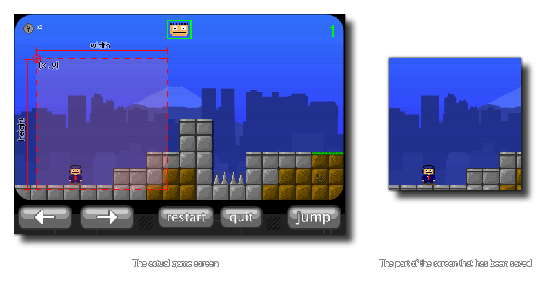

screen_save_part(fname,x,y,w,h);
| 参数 | 描述 |
|---|---|
| fname | 屏幕截图保存的名称。 |
| x | 捕捉屏幕区域的左上角X坐标。 |
| y | 捕捉屏幕区域的右上角Y坐标。 |
| w | 捕捉屏幕区域的宽度。 |
| h | 捕捉屏幕区域的高度。 |
返回： N/A
使用这个函数可以对当前游戏窗口浏览器显示的内容的一部分进行截图保存。选择区域的坐标基于显示器的 绝对尺寸，所以 (0,0)一直是屏幕的左上角。Below is an image that shows how this function works:  The file will be saved to the working directory of the game.
注： 这个函数不支持HTML5平台。
if keyboard_check_pressed(ord("S"))
{
screen_save_part(working_directory +
"\Screens\Screen_"+string(num)+".png", 0, 0, 100, 100)
num += 1;
}
上述代码在按下“S”键时将游戏屏幕边长100像素的正方形区域保存为截图。截图保存在特定的目录里，其编号使用一个变量递增后得到。